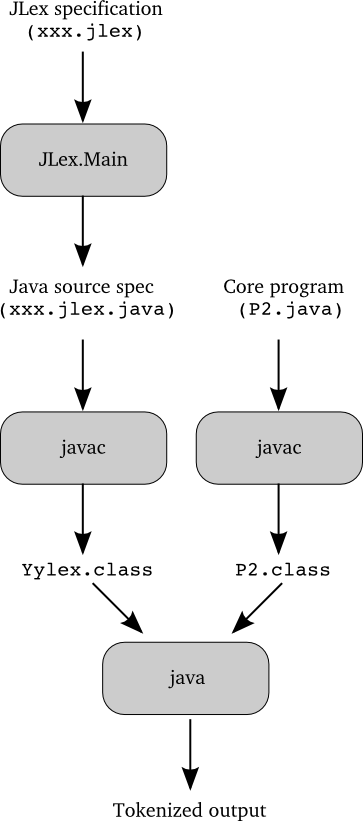

JLex is a scanner generator that produces Java code. Here's a picture illustrating how to create and run a program using JLex:
The input to JLex is a specification that includes a set of regular expressions and associated actions. The output of JLex is a Java source file that defines a class named Yylex. Yylex includes a constructor that is called with one argument: the input stream (an InputStream or a Reader). It also includes a method called next_token, which returns the next token in the input.
The picture above assumes that a class named P2 has been defined that contains the core program of interest. That program will declare an object of type Yylex, and will include calls to the Yylex constructor and its next_token method.
A JLex specification has three parts, separated by double percent signs:
The state-list part of a rule is discussed below. Ignoring state-lists for now, the form of a regular expression rule is:
When the scanner's next_token method is called, it repeats:
until an action causes the next_token method to return. If there are several patterns that match the same (longest) sequence of characters, then the first such pattern is considered to be matched (so the order of the regular-expression rules can be important).
If an input character is not matched in any pattern, the scanner throws an exception. It is not good to have a scanner that can "crash" on bad input, so it is important to make sure that there can be no such unmatched characters!
The regular expressions are similar to the ones discussed in the scanner notes. Here's how they are used to match the input:
abc
==
while
"abc"
"=="
"while"
"a|b"
matches the three-character sequence: a then |
then b, rather than matching a single a or a
single b.
| | | means "or" |
| * | means zero or more instances of |
| + | means one or more instances of |
| ? | means zero or one instance of |
| ( ) | are used for grouping |
| \n | newline |
| \t | tab |
| \" | double quote |
| - | means a range of characters; e.g., a-z means "a to z". |
| ^ | is only a special character if it is the first character in the square brackets; it means not any of the following characters. So for example, [^abc] matches any character other than an a, or a b, or a c. |
| \ | is used as an escape character with n, b, ", etc as usual; it can also be used to escape the characters that are special inside a character class (e.g., [a\-z] matches an a or a - or a z, and [\\] matches a backslash. |
| " | can be used around characters that are special inside a character class to make them match themselves (e.g., ["\"] matches a backslash, and ["-"] matches a hyphen. To include a double-quote character in a character class, escape it with a backslash. |
Note that whitespace only matches itself if it is inside quotes or in a character class; otherwise, it ends the current pattern. So the two rules:
[a bc] {}
a|" "|b|c {}
are equivalent;
each matches an a, or a space, or a b, or a c,
while the rule:
a bc {}
causes an error when you try to process your specification.
Question 1: The character class [a-zA-Z] matches any letter. Write a character class that matches any letter or any digit.
Question 2: Write a pattern that matches any Pascal identifier (a sequence of one or more letters and/or digits, starting with a letter).
Question 3: Write a pattern that matches any C identifier (a sequence of one or more letters and/or digits and/or underscores, starting with a letter or underscore).
Question 4: Write a pattern that matches any C identifier that does not end with an underscore.
Recall that the second part of a JLex specification contains directives. This can include specifying the value that should be returned on end-of-file, specifying that line counting should be turned on, and specifying that the scanner will be used with the Java parser generator java cup. (See the JLex Reference Manual for more information about directives.)
The directives part also includes macro definitions. The form of a macro definition is:
name = regular-expressionwhere name is any valid Java identifier, and regular-expression is any regular expression as defined above. Here are some examples:
DIGIT = [0-9] LETTER = [a-zA-Z] WHITESPACE = [ \t\n]
Once a macro has been defined, it can be used in a regular expression (either to define another macro, or in the "Regular Expression Rules" part of the JLex specification. To use a macro, just use its name inside curly braces. For example, given the above macro definitions, the following pattern could be used to match Pascal identifiers:
{LETTER}({LETTER}|{DIGIT})*
Define a macro named NOTSPECIAL that matches any character except a newline, double quote, or backslash.
You can include comments in the first and second parts of your JLex specification, but not in the third part (because JLex will think they are part of a pattern). JLex comments are like Java comments: they start with two slashes, and continue to the end of the line.
Recall that each regular expression rule (a pattern and the action to be performed when the pattern is matched) can optionally include a list of states at the beginning of the pattern. For example:
Each time the scanner is called, it is in some state. Initially, it is in a special state called YYINITIAL. It will stay in that state unless it matches a pattern whose corresponding action includes code that causes it to change to another state. For example, given the rule:
If a rule has no list of states, then it will be matched in any state; however, if it has a list of states, then it will be matched only when the scanner is in one of those states. So for example, the rule for "abc" given above will only be matched after the rule for "xyz" has been matched.
Every state other than YYINITIAL must be declared in the JLex directives part of the JLex specification. Here's an example declaration:
Suppose that for floating-point numbers you want your scanner to return two values: the value before the decimal point, and the value after the decimal point. Here's an example of using a JLex state to do that (using some pseudo-code):
%%
DIGIT= [0-9]
DOT= "."
%state DOTSTATE
%%
<YYINITIAL>{DIGIT}+{DOT} { yybegin(DOTSTATE);
-- save the value so far --
}
<DOTSTATE>{DIGIT}+ { yybegin(YYINITIAL);
-- return the saved value and the new one --
}
A quoted string consists of three parts:
Use JLex states to write a specification to recognize quoted strings, and to return the number of escaped quotes in each such string. To declare a counter, declare a class with a static, public int field, in the "User Code" part of the JLex specification, and update/return that static field.
If you turn line counting on (by including %line in the "directives" part of the specification), you can use the variable yyline in the actions that you write for the regular expressions. The value of yyline will be the current line number in the input file, counting from zero (so to use that number in error messages printed by your scanner, you will need to add one to yyline).
You can also use the method yytext() in your actions. This method returns a String -- the sequence of characters that was just matched.
Here is a small (complete) JLex specification:
%%
DIGIT= [0-9]
LETTER= [a-zA-Z]
WHITESPACE= [ \t\n] // space, tab, newline
// The next 3 lines are included so that we can use the generated scanner
// with java CUP (the Java parser generator)
%implements java_cup.runtime.Scanner
%function next_token
%type java_cup.runtime.Symbol
// Turn on line counting
%line
%%
{LETTER}({LETTER}|{DIGIT})* {System.out.println(yyline+1 + ": ID " + yytext());}
{DIGIT}+ {System.out.println(yyline+1 + ": INT");}
"=" {System.out.println(yyline+1 + ": ASSIGN");}
"==" {System.out.println(yyline+1 + ": EQUALS");}
{WHITESPACE}* { }
. {System.out.println(yyline+1 + ": bad char");}
Note that the actions in this example are not what you would really put in a JLex specification for a scanner. Instead of printing, the first four actions should return the appropriate tokens.
Operators and Special Symbols in JLex
The following table summarizes the operators and special symbols used in JLex. Note that some characters have an entirely different meaning when used in a regular expression and in a character class. Character classes are always delimited by square brackets; they can be used in the regular expressions that define macros, as well as in the regular expressions used to specify a pattern to be matched in the input.
| Symbol | Meaning in Regular Expressions | Meaning in Character Classes |
| ( | Matches with ) to group sub-expressions. | Represents itself. |
| ) | Matches with ( to group sub-expressions. | Represents itself. |
| [ | Begins a character class. | Represents itself. |
| ] | Is illegal. | Ends a character class. |
| { | Matches with } to delimit a macro name. | Matches with } to delimit a macro name. |
| } | Matches with { to delimit a macro name. | Represents itself or matches with { to delimit a macro name. |
| " | Matches with " to delimit strings (only \ is special within strings). | Matches with " to delimit a string of characters that belong to the character class. Only \" is special within the string. |
| \ | Escapes special characters (n, t, etc). Also used to specify a character by its octal, hexadecimal, or unicode value. | Escapes characters that are special inside a character class. |
| . | Matches any one character except newline. | Represents itself. |
| | | Alternation (or) operator. | Represents itself. |
| * | Kleene closure operator (zero or more matches). | Represents itself. |
| + | Positive closure operator (one or more matches). | Represents itself. |
| ? | Optional choice operator (zero or one matches). | Represents itself. |
| ^ | Matches only at beginning of a line. | When it is the first character in the character class, complements the remaining characters in the class. |
| $ | Matches only at end of a line. | Represents itself. |
| - | Represents itself. | Range of characters operator. |